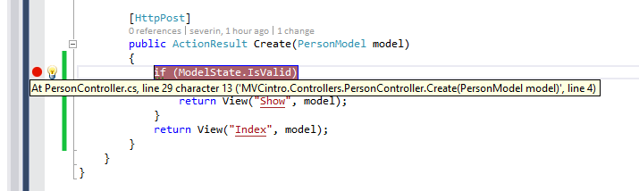
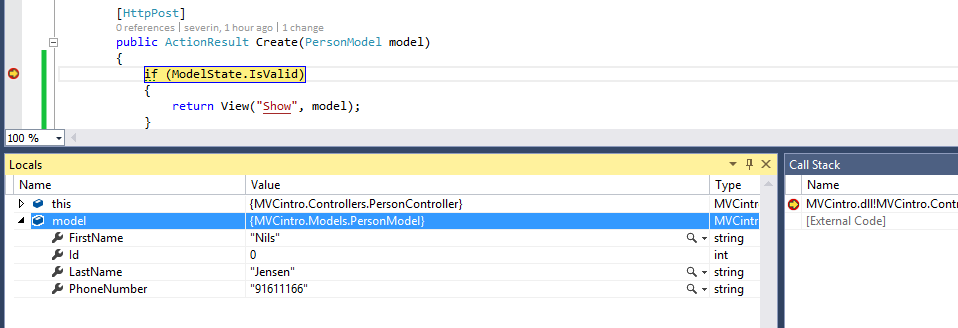

Frontend-validering
Valideringen vår går nå via serveren. For å redusere antall requests mot serveren og ikke minst for å gi brukeren raskere feedback er det fint å legge på frontend-validering med JavaScript. Dette er allerede innebygget ved hjelp av jQuery Unobtrusive Validation - alt vi behøver er å legge til biblioteket.
Før vi legger det til ønsker vi å verifisere at vi faktisk går via serveren. For å gjøre det går vi til PersonController og legger til et breakpoint ved å trykke i margen i metoden:

Den røde prikken indikerer at breakpoint et er satt. Bygg på nytt med debugging (F5). Send inn skjemaet og koden stopper nå midt i Create-metoden. Benytt sjansen til å titte litt rundt i PersonModel-objektet, det kan være greit å gjøre når man skal debugge:

Legge til jQuery Unobtrusive Validation
Vi er så heldig at JavaScriptet vi trenger allerede er med i standardoppsettet til MVC. Alt vi behøver å gjøre er å legge til scriptene nederst i _Layout.cshtml:
@Scripts.Render("~/bundles/jqueryval")
Viktig: Husk at det aldri er nok med bare frontend-validering. Da kan brukeren enkelt komme forbi validering ved feks. å skru av JavaScript i nettleseren.
<= Tilbake